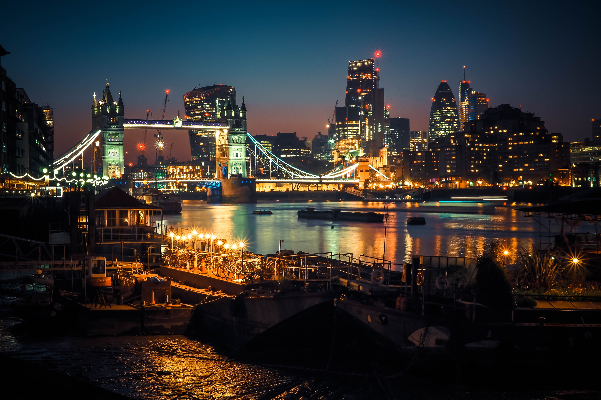
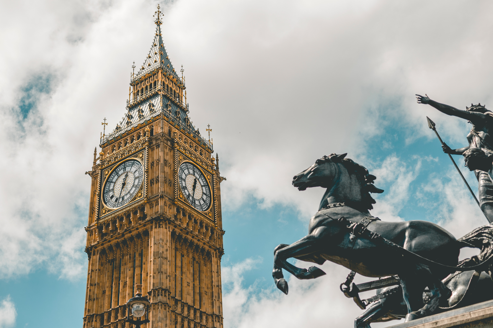

Londre est connue pour etre l'une des plus belle ville du monde. mais aussi l'une des plius diversifiée en terme de culture avec 50 nationalités parlant 300 languesdifférentes. La ville légendaire est aussi renommée pour la richesse de son histoire et de sa culturequi s'étalent sur presque 2000 ans.
Souvent confondu avec le London Bridge, Tower Bridge est probablement le pont le plus photogénique de la ville, vous l’aurez sans aucun doute aperçu sur de nombreuses cartes postales. Après huit années de travaux, le pont a ouvert en 1894 pour enrayer les problèmes de circulation dus à la rapide expansion d’East End. À la fois pont suspendu et basculant, ses passerelles en hauteur furent fermées en 1910 (faute de promeneurs), elles furent réouvertes en 1982. Aujourd’hui vous pouvez apercevoir de nombreux piétons effectuant la longue marche pour traverser la Tamise depuis le Tower Bridge en utilisant les trottoirs et les passerelles.
Vous pouvez découvrir le Tower Bridge de deux façons : la première est de visiter l’exposition officielle, qui vous émerveillera grâce à ses galeries, à la visite des Victorian Engine Rooms sans oublier bien sûr la promenade le long des passerelles à 42 m au dessus de la Tamise.

London Eye
Ouvert au public depuis mars 2000, le London Eye, aussi connu sous le nom de la grande roue du millénaire, est l’une des attractions payantes les plus fréquentées du Royaume-Uni. La raison est évidente : avec ses vues à 360 degrés depuis les 32 cabines, le London Eye vous offre ce que beaucoup considèrent comme le plus beau panorama de Londres. Contrairement aux grandes roues classiques, toutes les cabines vitrées sont attachées à la structure métallique, en d’autres termes, vous ne ressentirez aucune sensation de balancement. De plus, chaque tour dure environ 30 minutes, vous aurez donc tout votre temps pour admirer et photographier les paysages jusqu’à 40 kilomètres à la ronde.
Le London Eye est une attraction extrêmement populaire, en particulier auprès des touristes, préparez-vous donc à faire la queue. Chaque cabine (qui peut accueillir environ deux douzaines de personnes) a la climatisation, le chauffage et des bancs. Bien que le London Eye maintienne une allure réduite pour les passagers qui embarquent et débarquent, celui-ci s’arrête pour les personnes âgées et celles à mobilité réduites.
L'Abaye de westminster
Des siècles d’histoire anglaise se cachent derrière les murs de ce monument gothique connu dans le monde entier : l’Abbaye de Westminster. De nombreux monarques (dont Élizabeth II) ont été couronnés dans cette impressionnante cathédrale ou y reposent. Sous les plafonds voutés, vous trouverez la tombe d’Élizabeth Ire d’Angleterre, de Marie Ire d’Angleterre, d’Isaac Newton et d’Henri Purcell parmi bien d’autres. L’Abbaye a également été le lieu de cérémonie de nombreux mariages royaux, le plus récent étant celui du Prince William et de Catherine Middleton en 2011. Ne manquez pas le Coin des Poètes, une zone de l’église qui célèbre d’anciens grands noms des arts et de la littérature britannique. Des écrivains tels que Lord Alfred Tennyson et Charles Dickens sont enterrés ici, alors que des monuments commémoratifs honorent des écrivains comme Jane Austen, les sœurs Bronte, John Keats, T.S. Eliot et William Shakespeare. Notre guide sur l’Abbaye vous fournira des informations supplémentaires pour votre visite.
L’Abbaye de Westminster est encore aujourd’hui en activité. Des services religieux anglicans y sont célébrés quotidiennement et tout le monde peut y assister, peu importe votre foi.
Palais de Westminster (Big Ben)
Possiblement le monument reconnaissable de tous en Angleterre, le Palais de Westminster et Big Ben auraient pu subir un sort très différent. En 1834 un feu a détruit la quasi-totalité des bâtiments du Parlement. Les travaux de reconstruction ont démarré quelques années plus tard. Ce monument de style gothique qui se dresse le long de la Tamise est le témoignage de l’Ère Victorienne dont il est issu. Le Palais de Westminster est encore aujourd’hui le siège du Parlement, lieu où les hommes politiques se retrouvent afin de créer la législation pour le Royaume-Uni et les territoires britanniques d’outre-mer. Big Ben contrairement à l’idée reçue, n’est pas le nom de l’horloge géante, ni sa tour (appelée Elizabeth Tower) mais celui de la grande cloche (Great Bell) couverte par la flèche.
Vous pouvez visiter les différentes chambres du Parlement avec un guide ou un audio guide.

National gallery
La National Gallery (ou, en français, la Galerie nationale), fondée en 1824, est un musée situé à Londres et occupant le nord de Trafalgar Square depuis 1838. Elle détient un patrimoine artistique composé principalement de peintures datant de 1250 à 1900, les œuvres plus récentes étant abritées à la Tate Modern. La collection de 2 300 peintures appartient à l'État britannique et l'accès à la collection principale est gratuit. Seules les expositions temporaires sont soumises à un prix d'entrée. La Gallery est un « organisme public non ministériel » rattaché au Département de la Culture, des Médias et du Sport britannique.